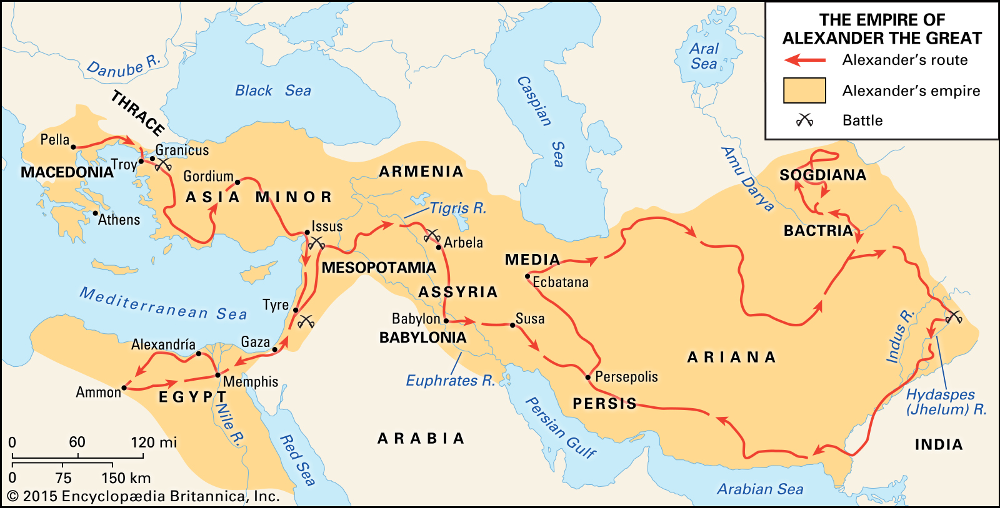

Timeline
July 356 BC:
Differing accounts share a similar idea: Alexander, from conception, was destined to be a ruler, to be great. Records share that his mother dreamt of a fiery thunderbolt entering her body and Philip II saw in a dream a lion mark on Olympias, again portraying Alexander was destined for far more than the average person. In a more mythological sense, some accounts say he was conceived by the god Ammon, who, in the form of a serpent, had intercourse with Olympias.
Regardless of his conceptive origin, Alexander was raised by his father to be a military leader and the king of Macedonia.i
340 BC:
Alexander officially handed down the throne of Macedonia.iii
First military victory. Alexander assisted his father in conquering the Maedi, a Thracian tribe, and established the colony, Alexandropolis.iv
339 BC:
336 BC:
Before the assassination, tensions between the father and son had steadily increased until, in a drunken state, the two broke out in a brawl at Philip II wedding to a young Macedonian, Cleopatra. The union between Philip and Cleopatra threatened the rise of an heir to Macedonia more legitimate than Alexander.vi
335 BC:
He soon faced unrest in Thebes and lost 500 troops in battle. In retaliation, his forces demolished the city, killing more than 6,000 of its residents and selling approximately 30,000 people into slavery.vii
334 BC:
333 BC:
Cut the Gordian Knot- the Gordian knot in Gordium was prophesied that a man who untied the knot was to receive power over Asia Minor or even all of Asia. After taking the city of Gordium, Alexander was shown the chariot of Gordias and was told about the prophecy. Alexander, wanting to be the most powerful, attempted to untie the knot. He failed to and instead drew his sword and sliced it in half with a single stroke.viii
332 BC:
Alexander’s army conquered Gaza through siege techniques and violence. The brutal victory in Gaza led to the surrender of other countries such as Jerusalem in the future.ix
327 BC:
326 BC:
King Porus’ infantry reportedly numbered between 20,000 and 50,000 men. His 4,000-man cavalry was reinforced by chariots and about 200 elephants as well. The elephants served as his most effective form of defense, for horses were terrified of the huge creatures.
To discourage Alexander from crossing the river, Porus ordered elephant-mounted troops to patrol the river’s east bank. The only way Alexander could get a body of troops across the river was by deception and surprise. In a sneak attack of deception and scheming, Alexander and his men crossed and defeated the Indians.x
323 BC:
In such a short life, what made him so successful?
The fractured power in Greece at the time of Philip’s rise to power allowed for Macedonia to become a prominent nation. By the time Alexander was ready to take over a trained military and ally system had been in place for years. He had been trained by his father and raised to lead from the front. In essence, Alexander took a great military in a great nation to expand the borders of his kingdom.
Alexander's Greatest Battles

Battle of Granicus
Alexander took over half of Asia Minor and conquered the PersiansBattle of Issus
First time facing Darius III of Persia, wonBattle of Tyre
Conquering of a major strategic city on route of PhoeniciaBattle of Gaugamela
Last major battle against the PersiansBattle of The Hydaspes
Battle against king Porus in India. Most difficult battleBattle of Chaeronea
Battle in which Macedonia took dominance in GreecePhalanxxiii
Spear in the right hand, shield in left covering ½ of his body and half of that of the man next to him.
Practiced and uniform, a mistake in shield holding or spear using could cause mass casualties.
Sarissa
Image captured from HistoryNet https://www.historynet.com/macedonian-sarissa-spartan-hunting-spear-of-philip-ii.htm
References
i. Nawotka, Krzysztof. 2010. Alexander the Great. Newcastle upon Tyne: Cambridge Scholars Publishing. 1-2.ii. Ibid., 48.
iii. Ibid.
iv. Ibid., 49.
v. Katie Marsico. 2009. Alexander the Great: Ancient King & Conqueror. Essential Lives. Edina, MN: Essential Library. 29-32. http://search.ebscohost.com/login.aspx?direct=true&AuthType=shib&db=nlebk&AN=395101&site=eds-live.
vi. Ibid.
vii. Ibid., 35.
viii. https://www.ancientpages.com/2020/05/20/gordian-knot-and-how-alexander-the-great-managed-to-outmaneuver-the-problem/
ix. Mercer, Charles. 2015. Alexander the Great. Newbury: New Word City, Inc. 32-33. http://search.ebscohost.com/login.aspx?direct=true&AuthType=shib&db=nlebk&AN=1370515&site=eds-live.
x. Mercer, Charles. 2015. Alexander the Great. Newbury: New Word City, Inc. 49-51.http://search.ebscohost.com/login.aspx?direct=true&AuthType=shib&db=e900xww&AN=1370515&site=eds-live.
xi. Kate Marsico, Alexander the Great: Ancient King and Conquerer, 26-29.
xii. Ibid., 38-39.
xiii. . John Sadler, and Rosie Serdiville. 2018. Alexander the Great: Conqueror, Commander, King. Casemate Short History. Oxford: Casemate Publishers, 44-46. http://search.ebscohost.com/login.aspx?direct=true&AuthType=shib&db=e000xna&AN=2023101&site=eds-live.